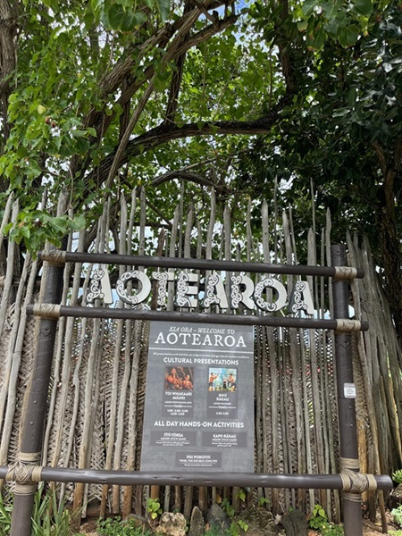
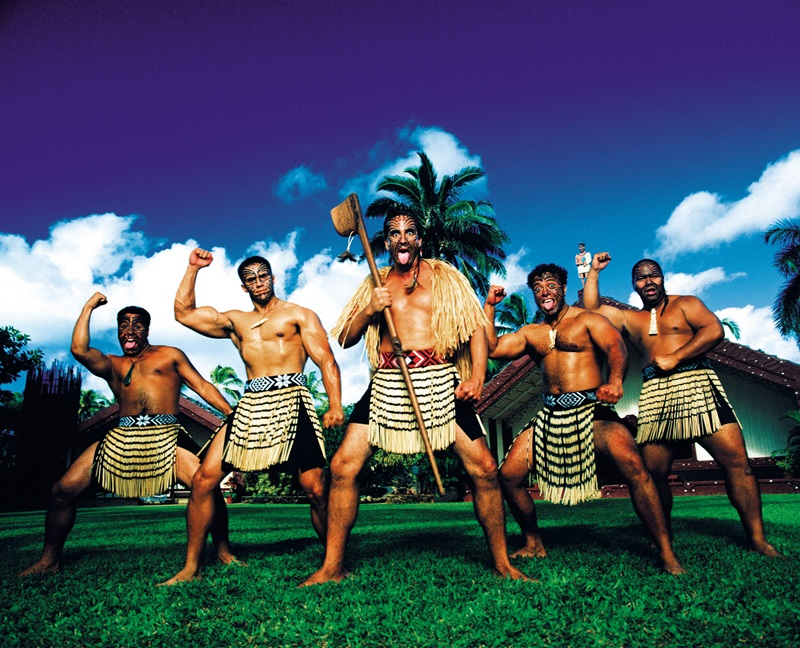

"Aotearoa"
The greeting word: "Kia Ora"Aotearoa is one of the island that you would not want to miss. They are best known by their Haka.They believe in Spirits and their ancestors become spirit and stays with their families after death. In order to keep evil spirits from them, they use scary wooden carvings for their housings and they carve their ancestors and family members who passed away into their pillars.
 